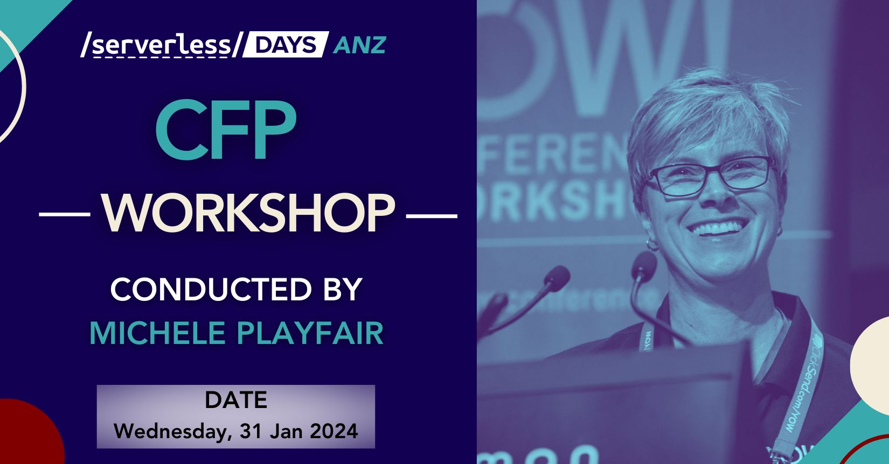

We are now accepting submissions for speaker presentations at ServerlessDays ANZ 2024. If you have valuable insights, innovative ideas, or practical experiences related to serverless computing, we want to hear from you! Whether you're an experienced speaker or a first-time presenter, we welcome submissions from all backgrounds and levels of expertise.
We are particularly interested in presentations that cover the following topics (but not limited to):
By speaking at ServerlessDays ANZ, you'll have the opportunity to:
We are very excited to announce an exclusive workshop, helping potential presenters prepare their Call For Papers submission. This session will be conducted by experienced presenter, conference organizer, and industry leader Michele Playfair on Wednesday 31st January 2023.

Express your interest by emailing us at anz@serverlessdays.io, and we look forward to seeing you then!
Sessions can be submitted through our Sessionize pages below. Each city has it's own CFP process, so if you can only make it to one location, we'd still love to hear from you there. All presentations are live and in-person, with our CFP closing on March 31st, 2024.